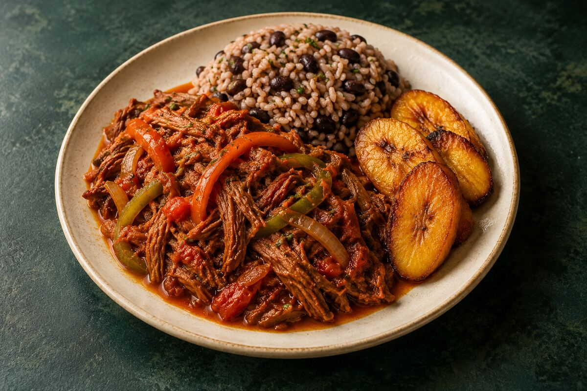

PROTOTIPO · Carta, precios e imagen de ejemplo. No recibe pedidos ni mensajes reales.
DE CUBA, CON SABOR
Una probadita
de Cuba.
Descubre la carta y elige dónde
quieres hacer tu pedido.
Explorar la carta ↓Manuel Montt 1041, local 43 · Providencia

Un clásico cubano · imagen ilustrativa
NOS ENCONTRAMOS EN PROVIDENCIA
El próximo antojo,
en Químbara.
Manuel Montt 1041, local 43
Consulta horarios y novedades en Instagram.
@quimbara_cu ↗